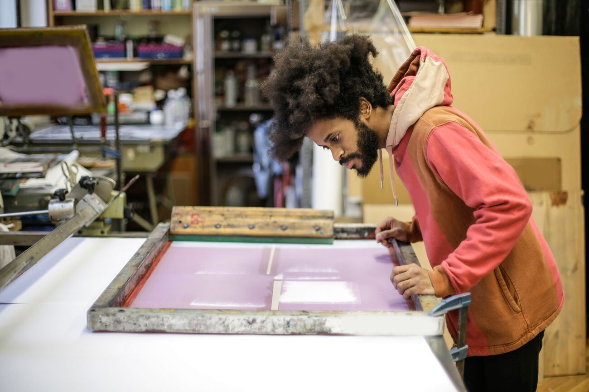

Wie ein Satz auf den Pullover kommt

PlatzhalterThurid sammelt Sätze. Aus rund siebzig wurden sechs, und die hingen am Open Summit 2026 an einer Wand. Wer vorbeikam, klebte Punkte: würde ich kaufen, nett, verstehe ich nicht.
Der erste Druck ist „Liberty looks good on you“. Die nächsten folgen, ein Satz pro Drop.
Liberalismus ist unsichtbar, als Liberale kannst du deine Mitstreiter in der Menge nicht erkennen. Das ändern wir mit unserem Label für liberale Mode, die man im Alltag gerne trägt: cool, hochwertig, mit klaren Schnitten, positiven Botschaften und subtilem Branding. Liberale gehen nicht jeden Freitag protestieren oder recken gemeinschaftlich die Faust in die Luft. Doch uns verbinden Überzeugungen, Werte und Ideen – diese Verbindung sollte man sehen können.
Damit Liberale sich endlich als Teil einer Gemeinschaft fühlen können und Freiheit sichtbar wird. So wird Freiheit auch für die zugänglich, die mit freiheitlichem Mindset, aber ohne vorheriges Commitment unterwegs sind. Für diese Menschen kann unser Label zum ersten Kontakt mit der Freiheitsbewegung werden.